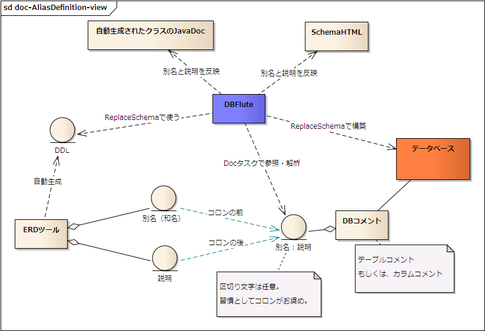

別名(和名)の利用
${indexlist}別名(和名)とは？
ここでいう別名とは、テーブルやカラムの論理名のことを示します。 例えば、MEMBERテーブルであれば別名は "会員" です。
別名は、実際のテーブル名やカラム名(物理名)とは違いプログラミングの処理では利用されませんが、 人がそのテーブルやカラムを理解するのに重要で、例えばER図に物理名に加えて別名が定義されることで、業務データモデルがわかりやすいものとなります。
できればこの別名をプログラムに近いドキュメントでも利用したいものです。 ですが、データベースの機能として別名を定義する領域は用意されていません。そのテーブルやカラムの説明を定義する "DBコメント(テーブルコメントやカラムコメント)" という領域だけが用意されているのが通常です。
別名(和名)をDBコメントに
DBFluteはDBコメントは取得できますが、さすがにER図の上だけで定義されている別名を取得することはできません。 それでも、DBFluteで自動生成されるドキュメント(SchemaHTMLやクラスのJavaDocコメント)に、この別名を載せることができれば実装上の助けとなるでしょう。
そこで、DBコメントの中に 別名[区切り文字]説明 という形式で両方のデータを定義しておいて、その区切り文字が何なのかをDBFluteプロパティで定義すれば、 DBFluteが別名と説明を分離して取得し、それぞれのドキュメントにそれらが反映されます。
別名定義の概念図
図 : 別名定義の概念図 
{kind=link}
別名の定義
documentDefinitionMap.dfprop の aliasDelimiterInDbComment に、区切り文字(デリミタ)を設定します。習慣的に ":" (コロン)が推奨されますが、ERDツールなどDBコメントを定義する処理に合わせましょう。
また、全てのテーブルやカラムに必ずしも別名や説明があるとは限りませんので、デリミタが存在しない場合のDBコメントは別名なのか説明なのか、 これをERDツールなどDBコメントを定義する処理に合わせて決定します。デフォルトではDBFluteは "説明" と認識しますので、もしデリミタが存在しない場合は別名ということであれば、同じく documentDefinitionMap.dfprop の isDbCommentOnAliasBasis を true に設定します。
設定できたら、再自動生成してみましょう。Docタスクを実行すると、SchemaHTML では別名と説明が独立して表現されます。 Generateタスクを実行すると、Entity や ConditionBean のテーブルやカラムに対応するメソッドに別名が表示されます。
説明をJavaDocに
一方で、"説明" をJavaDocコメントに反映させるのは別途設定が必要です。これは、DBコメントの "説明" がJavaDocコメントに向いているかどうか、どのような "説明" を入れるか次第で変わってくるため、デフォルトでは OFF になっています。
もし、"説明" が実装する上で参照すると役立つ情報になっている、かつ、JavaDocコメントのフォーマットに適しているのであれば、 documentDefinitionMap.dfprop の isEntityJavaDocDbCommentValid を true にして再自動生成します。すると、Entity や ConditionBean のテーブルやカラムに対応するメソッドに "説明" が表示されます。
地味ながら活用したい機能
とても地味ですが、しっかり活用できるとディベロッパーが地味に助かるものです。 カラムには業務を表すのに適した名前が付けられるべきですが、確かに限度もあります。 ローカル言語の名前がしっかり付いているとわかりやすいものです。
逆に、このようにJavaDocコメントに "見るに値する便利な情報" が入っていることで、ディベロッパーが IDE (Eclipseなど)でメソッド補完したときに、 JavaDocコメントをしっかり見る習慣のきっかけにもなります。
ちなみに、DBコメント作成の DDL は、ERDツールから自動生成したいものです。 別名と説明の両方をいい感じにDBコメントに定義する機能が求められます。